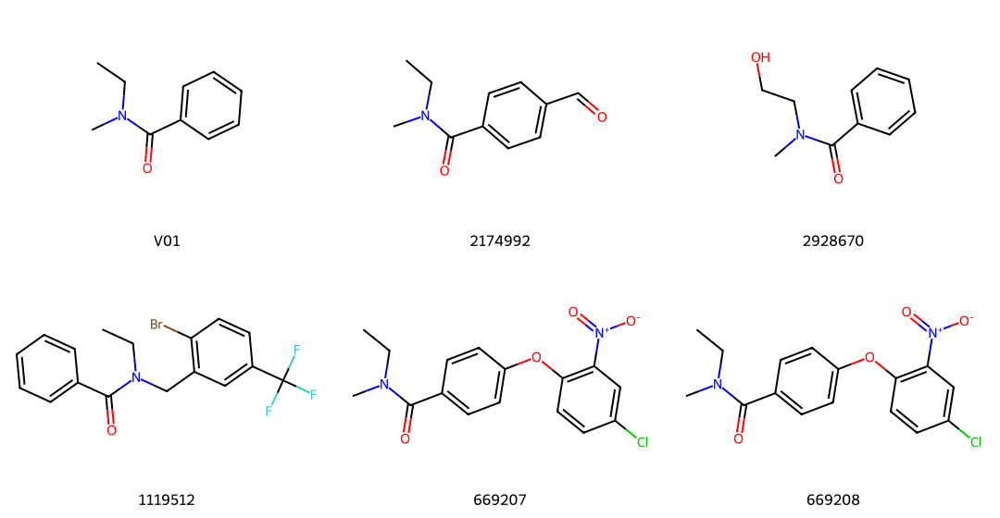
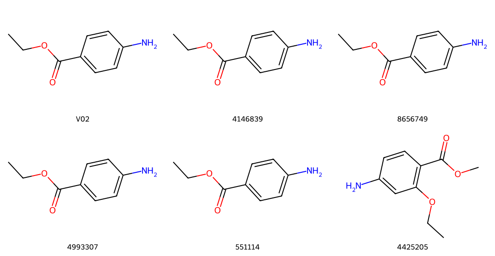
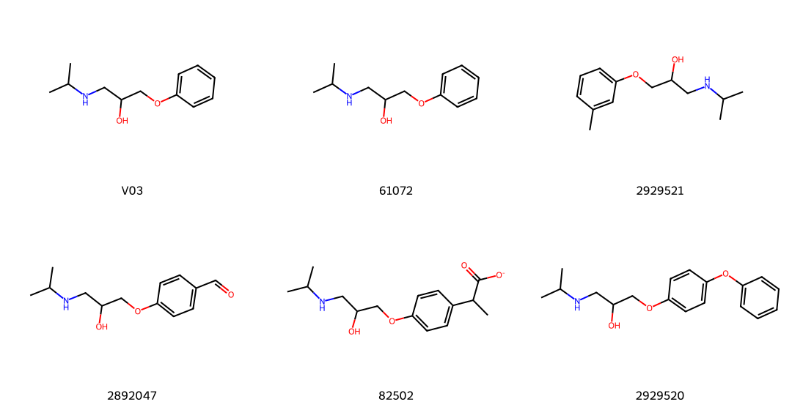
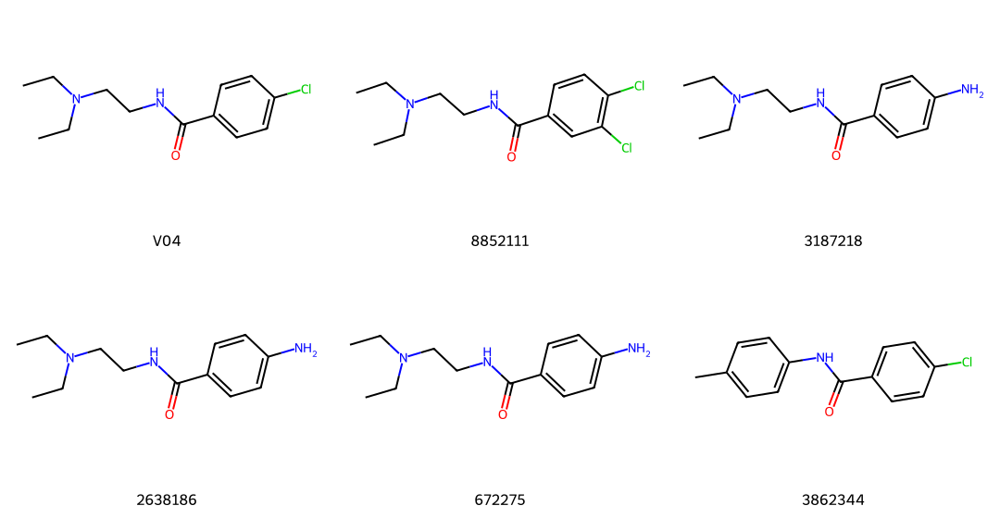
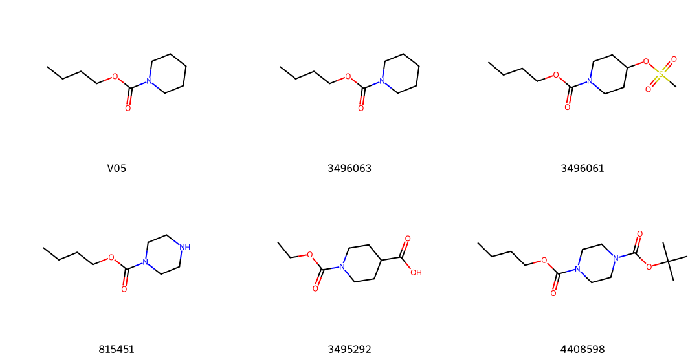
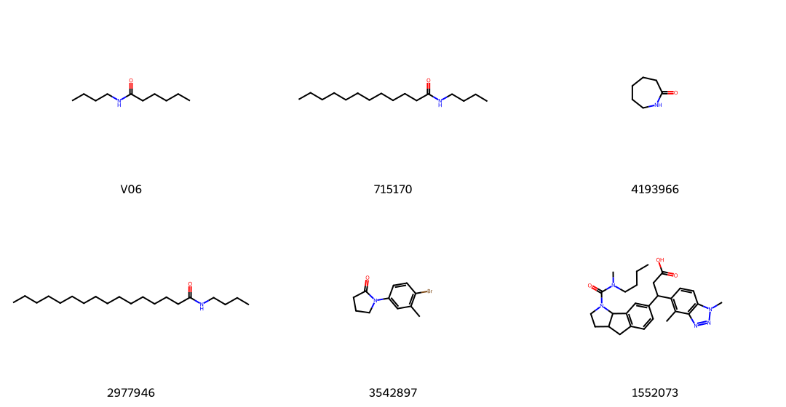

六个新目标：实际检索与前五项原文核查
目标与预期在查询前固定；本次未修改业务规则。审查为开发者逐例分析，不冒充独立专家评级。
V01 芳基叔酰胺
优先核查苯甲酰来源与乙基甲基胺形成酰胺C—N键的实例；已有叔酰胺的无关后修饰不能替代。

第一格为目标，其余按展示顺序列出匹配材料；命中可能来自反应物使用通道。
- 2174992 / method 原文以含对位醛的苯甲酸先活化，再与乙基甲基胺形成叔酰胺；支持所需酰胺连接，额外醛基与目标不同。
- 2928670 / unverified 未定位原文；材料从反应物通道出现，图示为已有苯甲酰胺的羟乙基酯化，不是目标叔酰胺形成证据。
- 1119512 / limited 原文明确苯甲酰氯与乙基苄基胺参照其他步骤反应，提供叔酰胺形成线索；N取代及混入的额外结构与目标不同，所引用步骤未核查。
- 669207 / method 原文N-甲基乙胺与前例酰氯相关底物反应生成对应叔酰胺，保留目标胺取代；芳环外围差异较大。
- 669208 / not_target_step 原文为硝基还原，目标酰胺已存在于输入，仅为相关结构使用。
V02 对氨基苯甲酸乙酯
优先核查保留乙酯的芳硝基还原，或保留芳胺的羧酸乙酯化；必须核对芳环取代位置。

第一格为目标，其余按展示顺序列出匹配材料；命中可能来自反应物使用通道。
- 4146839 / method 原文明确对溴苯甲酸乙酯与氨进行钯催化氨化得到目标；表格细节未全核查，不外推最优条件。
- 8656749 / contradictory 底物为4-氨基吡啶与氯乙酰氯，原文却命名对氨基苯甲酸乙酯；谱图没有乙酯对应信号且有酰胺NH/亚甲基线索，来源内部矛盾，不计目标制备。
- 4993307 / method_duplicate 按同段落号及文献种类码定位原文，支持对溴苯甲酸乙酯氨化；与4146839同类报道内容，不计独立新策略。
- 551114 / method 原文对氨基苯甲酸在乙醇/HCl中酯化，产物质谱和报告相符，直接支持目标酯化。
- 4425205 / limited 原文氢化硝基并保留甲酯，支持芳硝基还原方向；额外乙氧基及甲酯/乙酯差异存在。
V03 芳氧基仲醇与异丙氨基链
优先核查缩水甘油芳醚被异丙胺开环形成对应β氨基醇，或形成正确芳氧基连接的局部实例；核对N/O位点及开环区域。

第一格为目标，其余按展示顺序列出匹配材料；命中可能来自反应物使用通道。
- 61072 / method 原文明确苯基缩水甘油醚与异丙胺转化为对应β氨基醇；支持目标连接，操作引用例II未进一步核查，不将省略立体信息视作手性验证。
- 2929521 / unverified 原文未定位，图示环状氨基醇与甲酚对应的连接不能自行当作已验证开环方法。
- 2892047 / unverified 原文未定位，列出氯醇及环氧两种结构，可能混入替代前体；不自行补出具体步骤。
- 82502 / not_target_step 原文是微量样品的衍生化/HPLC分析操作，反应表端点还与文字有差异；不是目标β氨基醇制备。
- 2929520 / unverified 原文未定位，输入结构与产物关系未充分核实，不计有效目标方法。
V04 保留叔胺的芳基仲酰胺
优先核查端位伯胺与对氯苯甲酰来源酰胺化并保留叔胺；不能把叔胺烷基化等同目标酰胺形成。

第一格为目标，其余按展示顺序列出匹配材料；命中可能来自反应物使用通道。
- 8852111 / method 原文3,4-二氯苯甲酰氯与N,N-二乙基乙二胺反应，末端伯胺酰化且叔胺保留；目标少一个芳氯，需要验证迁移。
- 3187218 / unverified 未定位原文；图式从硝基酰氯到氨基产物包含额外还原，不能当作单独已核实酰胺化。
- 2638186 / not_target_step 原文使用已有普鲁卡因胺的芳胺与异氰酸酯形成脲，目标所需酰胺不是本步形成。
- 672275 / not_target_step 原文已有芳氨基酰胺参与杂芳基连接，不提供目标酰胺制备；也不直接得到对氯目标。
- 3862344 / limited 原文对氯苯甲酰氯与对甲苯胺酰化，支持目标酰基的反应；胺种类与叔胺共存要求未覆盖。
V05 环胺氨基甲酸酯
优先核查环胺氨基甲酸酯形成，保留C(=O)—O与C(=O)—N连接；其他羧酸酯或普通酰胺仅作较远参考。

第一格为目标，其余按展示顺序列出匹配材料；命中可能来自反应物使用通道。
- 3496063 / unverified 精确产物命中但原文未定位；溴代前体与叠氮化物到无取代产物的图式存疑，不计有效目标制备。
- 3496061 / unverified 原文未定位，图示为已有氨基甲酸酯上的羟基磺酰化，不证明目标氨基甲酸酯形成。
- 815451 / not_target_step 原文在已有单保护哌嗪另一氮上偶联甘氨酸，属于使用已存在的氨基甲酸酯。
- 3495292 / unverified 图式提示氯甲酸乙酯与哌啶羧酸形成氨基甲酸酯，但原文未定位，暂不计核实方法。
- 4408598 / limited 原文选择性脱除哌嗪另一氮的Boc并保留丁氧羰基；支持保护基相容性，不是目标哌啶氨基甲酸酯形成。
V06 无环仲酰胺
优先核查脂肪羧酸衍生物与丁胺形成酰胺；放宽远端链长度可提供方法类比，但必须保留仲酰胺及两端连接。

第一格为目标，其余按展示顺序列出匹配材料；命中可能来自反应物使用通道。
- 715170 / limited_method 原文以月桂酸盐和丁胺盐在胶束/缩合剂体系生成N-丁基酰胺并用GC定量；目标短链羧酸的聚集行为不同，不能直接迁移源产率或操作。
- 4193966 / not_experiment 原段落为微生物途径组合的概念描述，不是所需开链酰胺的具体制备实验。
- 2977946 / unverified 图式为长链酰氯与丁胺形成酰胺，原文未定位，不能提升为已核实目标方法。
- 3542897 / unverified 图式为芳胺与氯代酰氯生成内酰胺，原文未定位且与目标开链仲酰胺差异大。
- 1552073 / not_target_step 原文以CDI及N-甲基丁胺在复杂环胺上形成脲相关连接并后续水解；不是目标脂肪羧酸与丁胺的仲酰胺化。